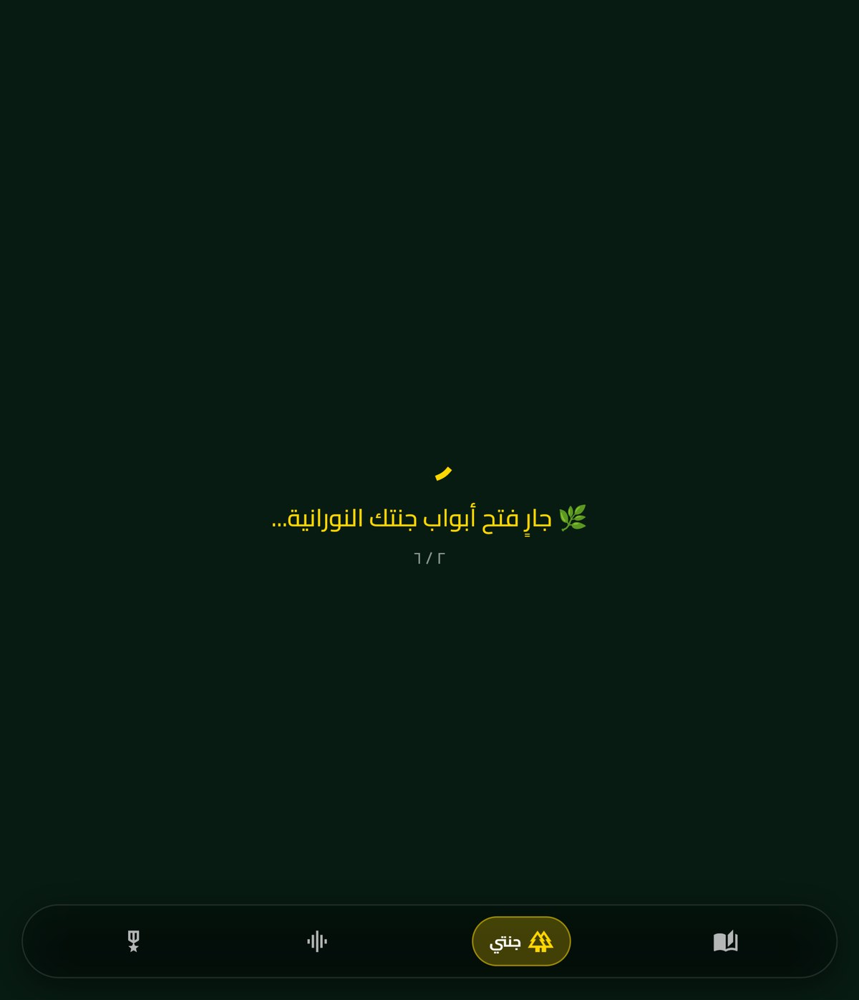
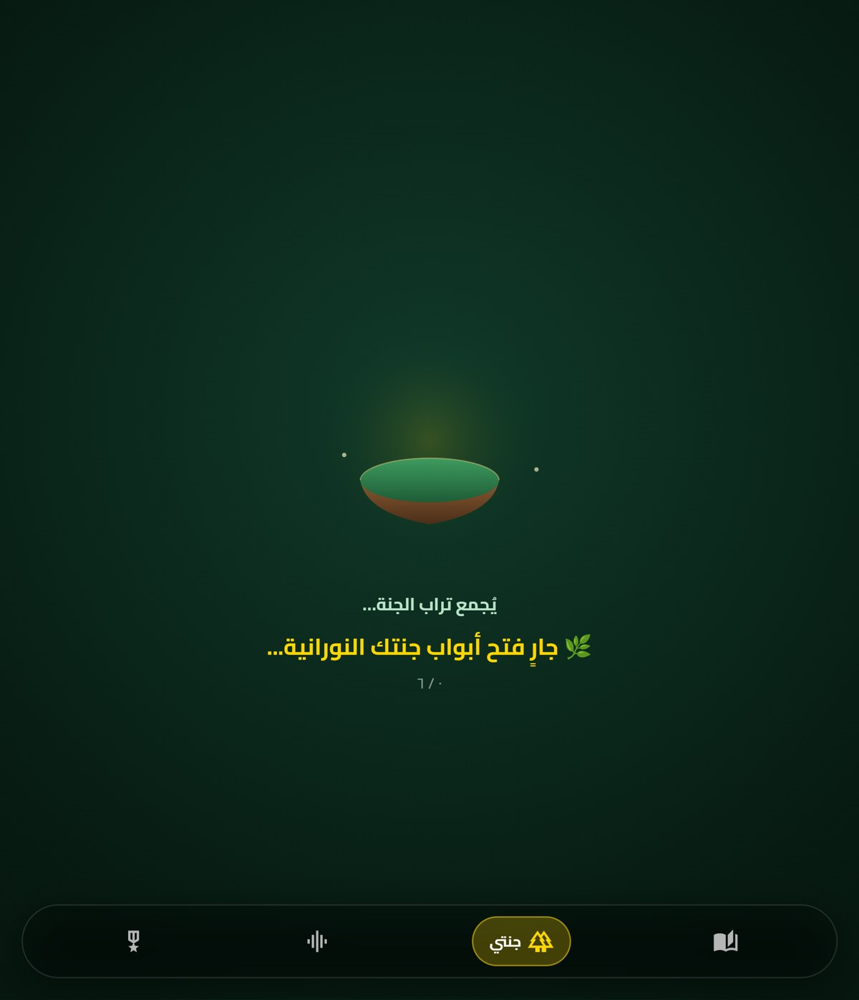
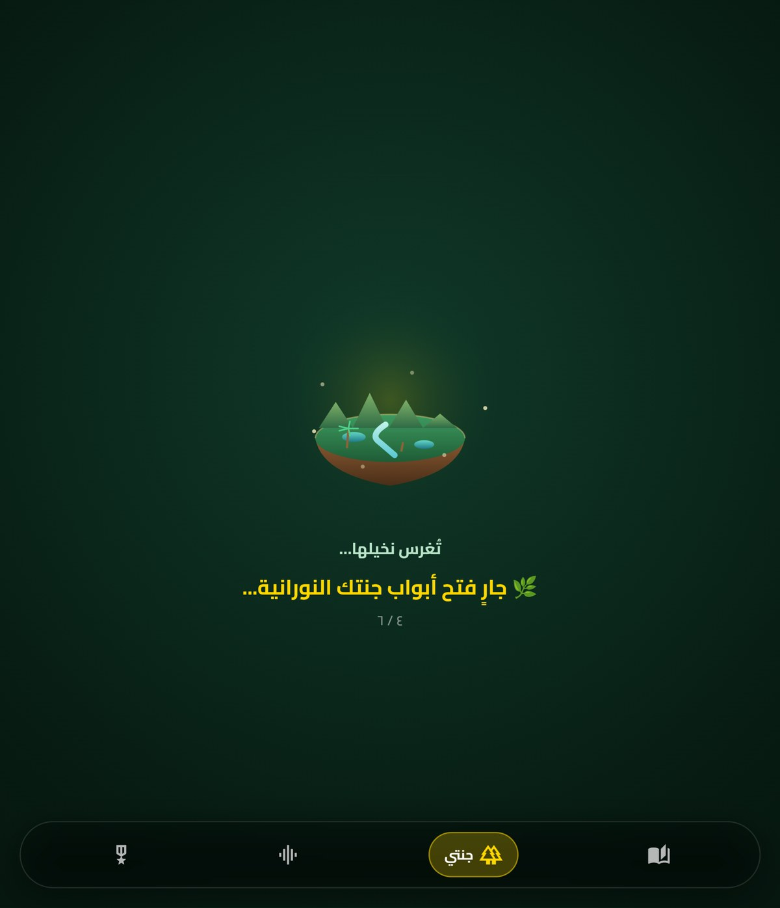
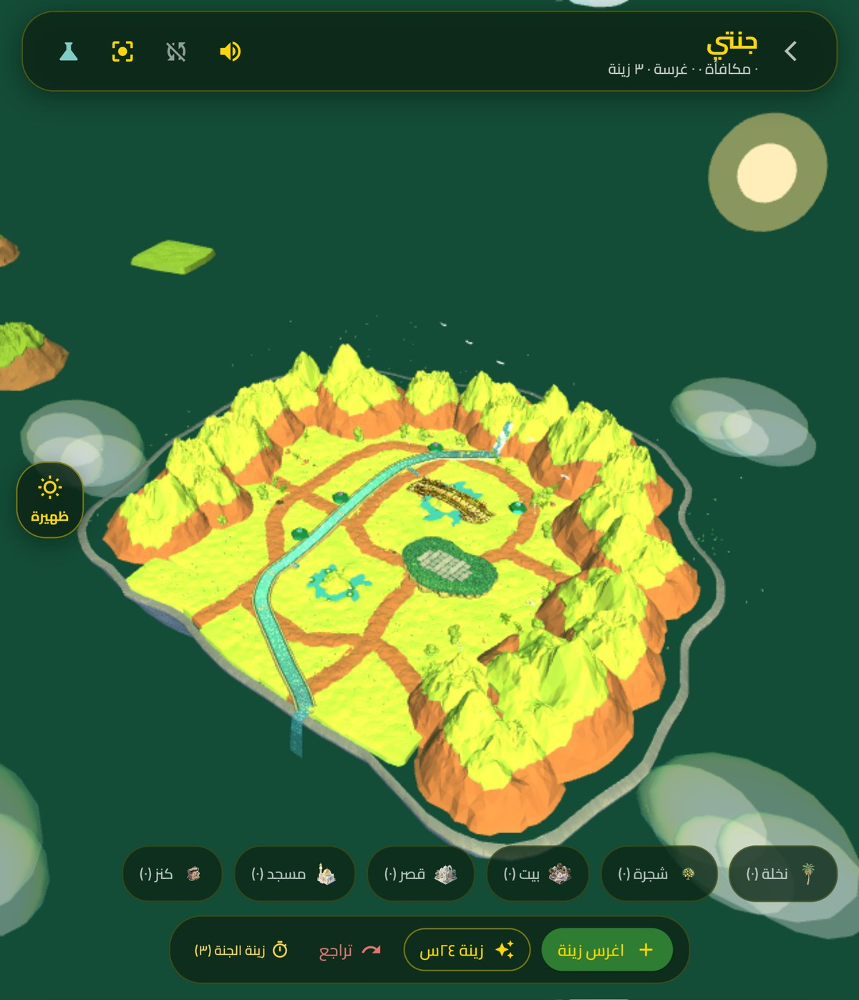

Canvas.
حاجب B3 كان ثلاثة عناصر: CircularProgressIndicator ذهبي، نص «جارٍ فتح
أبواب جنتك النورانية...»، وعدّاد done / total. المشكلة أن العدّاد
يقفز ستّ قفزات فقط (وحدات الحاجب الست)، فمعظم الوقت يبدو ثابتًا على
«١ / ٦»، ثم يقفز. ولا شيء في الشاشة يشبه ما ينتظره المستخدم.

الودجت الجديد lib/widgets/paradise_loader.dart يرسم جزيرة كاملة داخل
لوحة CustomPaint بحجم ١٧٢ بكسل في اللقطات أدناه
(ورُفع إلى ٢٠٠ في البناء النهائي): قشرة صخرية دافئة، مرج أخضر، أربع قمم،
بحيرتان، نهر، وثلاث نخيل. كل طبقة لها عتبة ظهور من نسبة الإنجاز، والجزيرة كلها
تكبر من ٧٨٪ إلى ١٠٠٪ بين أول أصل وآخره.
| النطاق | الطور | النص |
|---|---|---|
0 بالضبط | soil | يُجمع تراب الجنة… |
> 0 – 0.33 | mountains | تُرفع جبالها… |
0.33 – 0.66 | water | يجري نهرها… |
0.66 – 1 | palms | تُغرس نخيلها… |
1 بالضبط | ready | اكتملت جنتك |
العتبات على وحدات الحاجب الست لا على نسب عشوائية: ٣ من ٦ = ماء، و٤ من ٦ = نخيل.
والدالة paradiseStageFor تُختبر وحدها بلا محرّك رسم، ومعها حارس
«الطور لا يتقهقر» على ١٠١ قيمة.


AnimationController.repeat: هالة النور
تتنفّس ±٣٪، واليمامات تدور حول الجزيرة.TweenAnimationBuilder بـ٧٠٠ms
وeaseOutCubic فوق القفزات الخشنة الست.AnimatedOpacity ٥٦٠ms، ثم تُرفع
_gateDismissed فتُزال الطبقة من الشجرة نهائيًا — إبقاء حاجب شفاف
يترك بناءً في كل setState بلا فائدة.
✅ scene ready (6/6).
كتبت الاختبار على «التقدّم خارج ٠..١ يُقصّ بلا رمي»، فسقط على
double.nan. السبب مفاجأة في Dart:
double.nan.clamp(0.0, 1.0) // → 1.0 (وليس NaN!) double.nan > 0.0 // → false double.nan.isNaN // → true
لأن num.clamp يستخدم compareTo، وDouble.compareTo
يضع NaN فوق كل الأرقام، فيعيد الحد الأعلى ١٫٠. أي أن أي قيمة تالفة
كانت ستُظهر «اكتملت جنتك» وتكشف المشهد قبل أوانه. الفحص صريح الآن:
if (progress.isNaN) return ParadiseStage.soil;
clamp لتنقية NaN. هو يمرّر
القيمة إلى الحد الأعلى صامتًا. افحص isNaN قبل أي حساب تقدّم.
Stack المشهد، لا Route ولا
showModalBottomSheet: أي حجب لبناء DomLikeListenable
يرمي في OrbitControls ويترك المشهد أسود._assetsDone / _assetsTotal نفسه، لا مؤقّت
منفصل: النمو لا يكذب عن التقدّم أبدًا.clamp لتنقية NaN — أثبت الاختبار
أنه يعلن الاكتمال.flutter build web --release حقيقي في Chrome، بعد
reload ignoreCache. ولقطة «قبل» من إعادة بناء النسخة السابقة
(8463aac) لا من رسم يدوي — الفرق بين المؤشر والجزيرة حقيقي.